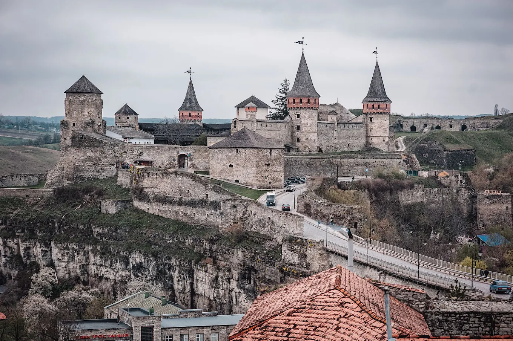
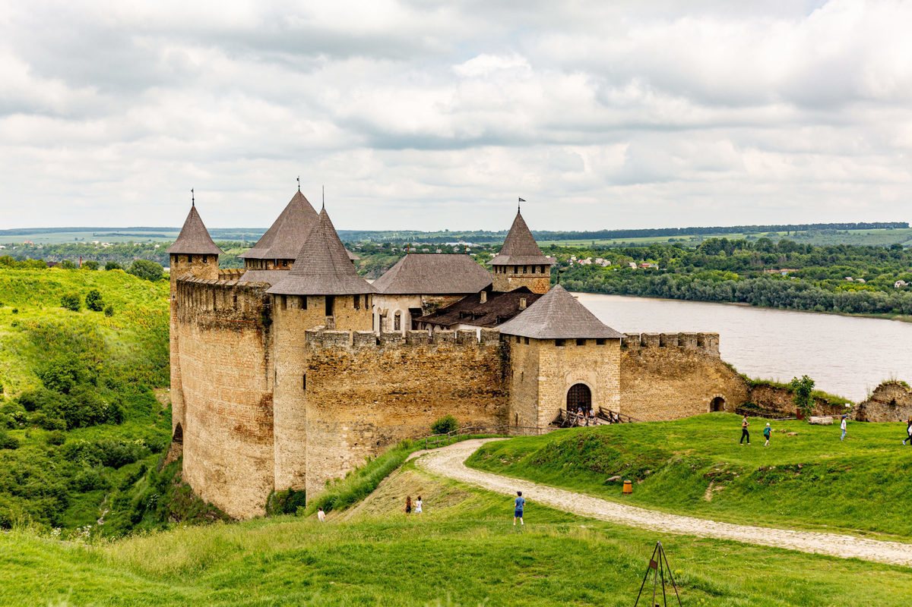
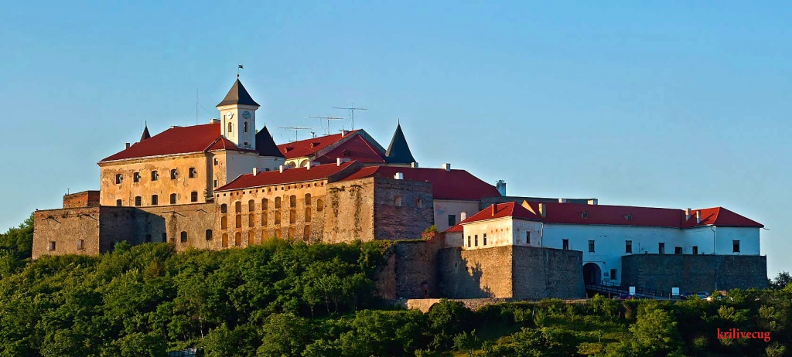
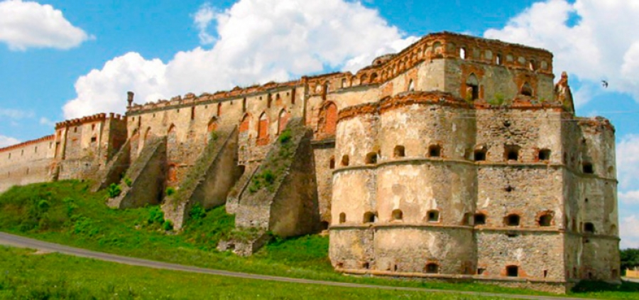
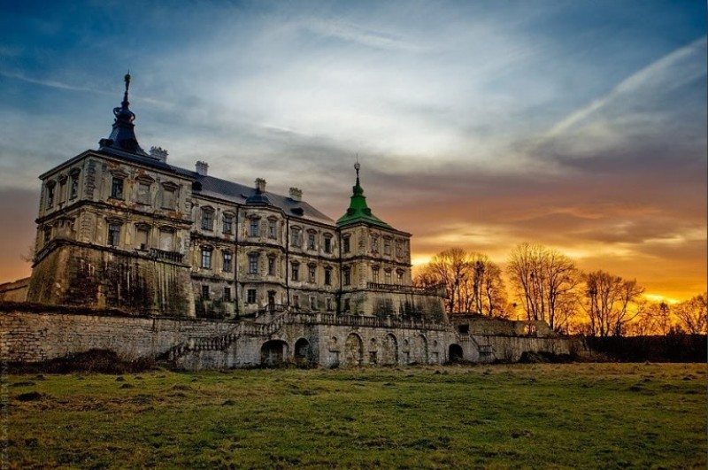
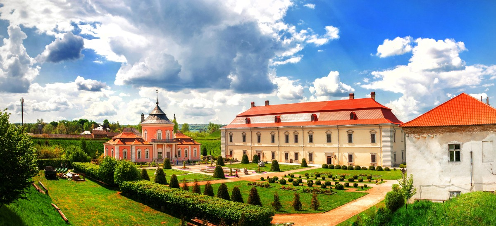

-
☞Кам'янець-Подільська фортеця☜
Кам'яне́ць-Поді́льська форте́ця — фортеця у місті Кам'янець-Подільський. Відома з XIV століття як важлива оборонна споруда Східної Європи та частина оборонної системи міста Кам'янець, колишньої столиці Подільського князівства XIV–XV століть, Подільського воєводства XV–XVIII століть, а далі Подільської губернії (1793–1925 pp.). Фортеця є складовою частиною Національного історико-архітектурного заповідника «Кам'янець», що належить до «7 чудес України».

-
☞Хотинська фортеця☜
Хоти́нська фортеця — середньовічна укріплена фортифікаційна споруда в Хотині (Чернівецька область, Україна), збудована русо-влахами за господарювання Мушатів у Молдавському князівстві на межі XIII–XVIII століть на місці руського городища (Х—ХІІІ). Ця твердиня на правому березі Дністра була однією з наймогутніших у тогочасній Східній Європі, важливим оборонним і торговельним пунктом Молдавії в часи господаря Олександра Доброго.[1]

-
☞Замок Паланок(Мукачево)☜
За́мок Пала́нок (Мука́чівський за́мок) — замок у закарпатському місті Мукачево. Унікальний зразок середньовічної фортифікаційної архітектури з поєднанням різних стилів, пам'ятка архітектури національного значення (№ 168). Замок побудований на горі вулканічного походження заввишки 68 м і посідає площу 13 930 кв. м. Точний час заснування замку невідомий, але в документах, які позначаються XI століттям, він уже згадується. Особливого значення надав замку угорський король Стефан І Святий, укріпивши його стіни. Справу Стефана І продовжив Св. Владислав. У 1086 році Мукачівський замок взяли в облогу Половці, та вони не змогли його захопити.

-
☞Меджибізький замок☜
Меджибізький замок побудований на мисі, утвореному річками Південний Буг та Бужок. Через таку топографію у плані він має форму видовженого трикутника з могутніми стінами і кутовими вежами, які значно виступають за лінію стін. Подвір'я замку має довжину 130 м, найбільшу ширину (з західного боку) — 85 м, його площа становить 0,75 га. Товщина мурів — до 4 м, висота у найвищих місцях — до 17 м.

-
☞Острозький замок☜
Острозький замок — розташовано на вершині 20-метрового пагорба над долиною річки Вілії, у районному центрі Острог, Рівненської області. Замок було побудовано на місці дерев'яного укріплення зруйнованого монголо-татарами 1241 року. Спочатку це була башта-донжон, яка тепер носить назву «Вежа Мурована». Замок був резиденцією князів Острозьких. Зараз на території Острозького замку розташовано Острозький краєзнавчий музей. Замок був оточений глибоким ровом, наповненим водою. Башти служили оборонною системою для замку: Мурована вежа, Кругла Вежа, Богоявленська церква-фортеця та Надбрамна башта (з 1905 року— дзвіниця)

-
☞Підгорецький замок☜
Підгоре́цький за́мок (або Палац у Підгірцях) — пам'ятка архітектури епохи пізнього ренесансу і бароко. Розташований у селі Підгірці Золочівського району Львівської області. Замок було збудовано на місці попередньої садиби Підгорецьких упродовж 1635–1640 років за вказівкою коронного гетьмана Станіслава Конєцпольського. Сучасного вигляду замок набув після реконструкції 1720-х років за Жевуських, коли було добудовано третій поверх, демонтовано надбрамну вежу тощо[1].

-
☞Золочівський замок☜
Зо́лочівський за́мок — замок, пам'ятка історії та культури національного значення в місті Золочеві Львівської області в Україні. Музей-заповідник «Золочівський замок» — відділ Львівської галереї мистецтв. Замок входить до туристичного маршруту «Золота підкова Львівщини». Великий житловий палац Золочівського замку — це двоповерхова будівля розміром 72×22 м з підвалами. Під час реставрації відтворено розташування кімнат, віднайдено шість туалетів початку XVIII століття, потайний хід та комини. Втраченими є печі, каміни, підлоги. З порталів внутрішніх дверей зберігся один повністю на першому поверсі та два напівзруйновані — на другому.
